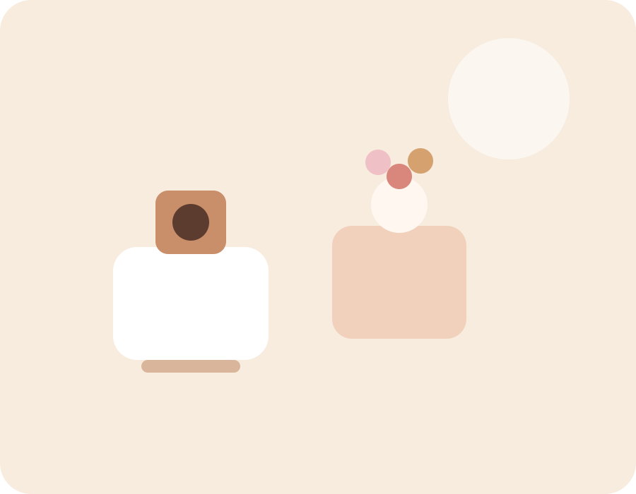

Cafe de especialidad y dulces de autor
+40
Opciones entre cafe, brunch y pasteleria
08:00
Apertura diaria para desayunos y cafe
100%
Produccion artesanal y fresca
Un espacio calido para desayunar, brunchear y disfrutar buena pasteleria.
En Bruna Cafe mezclamos bebidas bien preparadas, panes horneados en casa y una carta dulce pensada para acompanar cada momento del dia.

Favorito de la casa
Cappuccino con croissant de almendra
Una combinacion suave, aromatica y perfecta para comenzar la manana.
Nuestra propuesta
Cafe, brunch y postres en una experiencia visual limpia y acogedora.
El concepto mezcla una cafeteria contemporanea con una vitrina de pasteleria artesanal para quienes buscan algo rico y bien presentado.
Cafe de especialidad
Espresso, cappuccino, filtrados y bebidas frias con granos seleccionados.
Pasteleria artesanal
Tartas, croissants, cheesecakes y postres pensados para la vitrina diaria.
Brunch de temporada
Tostadas, bowls y opciones saladas para desayunos largos y encuentros tranquilos.
Ambiente
Interior calido, vitrina dulce y cafe servido con detalle.
Creamos un lugar comodo para trabajar, conversar o hacer una pausa con una taza bien hecha y algo recien horneado.